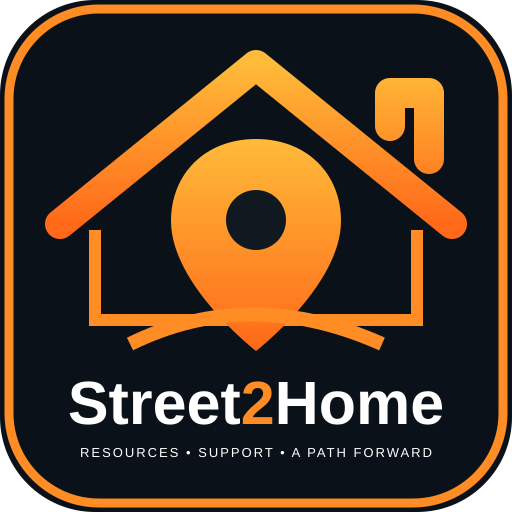

Street2HomeHelp that still works offline.
Meals, hygiene, Wi‑Fi, charging, ID help, shelter, transportation, survival information and emergency help.
What do you need?
My day
Find a meal and refill safe drinking water.
Use shower options or the offline wash-up guide.
Use Wi‑Fi to refresh resources and send queued comments.
Check shelter status, transportation and weather-safe options.
Ottawa resources
Hours and services can change. Community-reported tips are labeled. Call first when possible.
Offline notes
Leave a comment or correction
Comments are saved privately on this device. Community posting is not connected to a server yet.
Survival & hygiene
Use an established grill or permitted fire pit when possible. Keep fires small and attended. Never use gasoline or light a fire inside a tent, vehicle, building, under a bridge, or other enclosed/covered place. Extinguish completely.
No shower?
Water
Ottawa has drinking fountains/refill points. Only use fountains intended for drinking. Do not treat decorative fountains or river water as safe drinking water.
Cooking & heat
Grill reported on site. Community reported; check condition before relying on it.
Picnic/grill option.
Local fire use has been reported, but use only an established/permitted fire-pit location and obey posted restrictions. Exact fire location/rules need verification.
Community-reported microwave. Keep it clean, be respectful, and avoid repeatedly using it during busy daytime hours.
Stay warmer & drier
Jobs in Ottawa, IL
Use AI like a free job-search assistant.
AI can help build or improve a résumé, tailor it to a job, explain requirements, draft a cover letter, practice interviews, prepare follow-ups and break an application into simple steps.
Protect your information: Never give an AI tool your Social Security number, passwords, banking information or other sensitive account information.
Stored local job listings
Fresh job listings require Wi-Fi. The offline app keeps the last downloaded list and clearly shows its update date.
Choose your town
Resources and jobs are kept town-specific. Street2Home will not mix nearby towns into your results unless you intentionally switch locations.
Current town
Food, shelter, hygiene, Wi-Fi, transportation, jobs and other resources shown in the app use this town.
Search another town
Prototype behavior: switching demonstrates the location system. A future connected version will download that town's verified resources and job listings over Wi-Fi for offline use.
Saved resources
Updates & comments
This web app caches its pages offline after your first visit. Resource updates require a new published version. Comments remain on your device and are not yet shared publicly.
Queued comments
Emergency help
Call 911.
Call or text 988 in the U.S.
Share a local job lead
Because many local openings are never posted online, neighbors can share a lead they saw, heard about, or were told about. Leads stay clearly marked as community-reported until checked.
Do not post anyone's private phone number, Social Security number, passwords, or bank information.